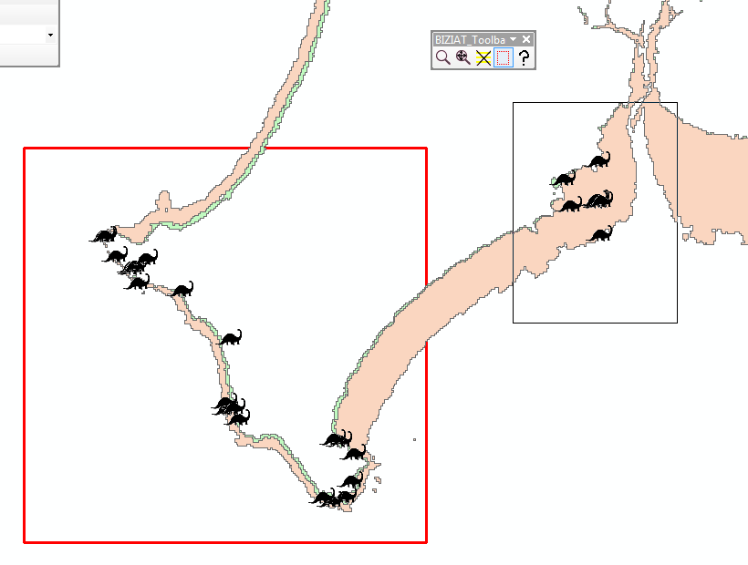

This set of tools is intended to assist researchers and the interested public to access the known locations dinosaur footprints (ichnofossils) that have been identified in the intertidal zone around Broome.
The smaller toolbar entitled BIZIAT_Toolbar contains the following tools: Zoom to Selected Features, Zoom to Full Extent, Clear Selection, Create Study Area, and Help. Of these the following require further explanation:
This tool will create a new polygon and overwrite the existing layer entitled "study_area". By clicking and dragging on the map, the polygon extent can be determined by the user. The shape is forced to be a rectangle:
The above image shows how a new study_area can be drawn.
This tool is useful to clear selections of the data when a new filtering process is to be performed on the data using the BIZIAT Statistics toolbar. Whilst most things work, this button provides a useful 'reset' button should anything go wrong!
The larger toolbar contains the following tools:
Allows the user to select from pre-determined tide height values, or to enter their own. Error checking is employed to ensure values are within the parameters required. Please note: there is a problem here, the combo box is not accepting negative values at this time.
This button will make new polygons that describe the submerged and exposed parts of the intertidal zone! See the design document for a detailed explanation of the geoprocessing employed. Please note, the existing 'exposed_extent' and 'submerged_extent' layers will be overwritten when this button is pressed!
The recommended workflow is to select a layer, then a field, and then a value. This will update the selection on the map. Selected points can then be exported (for example) using standard ArcMap tools.
This is essentially a filter. It allows the user to run an intersection analysis between their chosen layer, and one of the intertidal zone extents. In this way, for example, the user can see which of the user_points are accessible at the current tide height! Please note that this selection will carry over into the statistics analysis.
This button will calculate statistics on their chosen layer and field. Results will be displayed in the Python window. Results will also be saved as a csv file entitle output_table.csv stored in the working directory.